Emissionen
Hier werden vor allem Daten zu den Luftschadstoffemissionen im Kanton Zürich auf Grundlage der Emissionsbilanzierung dargestellt. Bei den Stickoxiden wird zusätzlich auf die Ergebnisse langjähriger Fahrzeug-Abgasmessungen im realen Fahrbetrieb eingegangen.
Stickoxide
Emissionsinventar
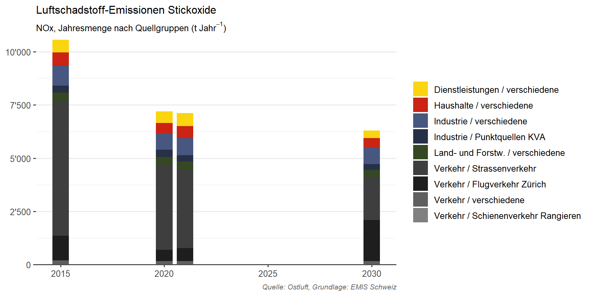
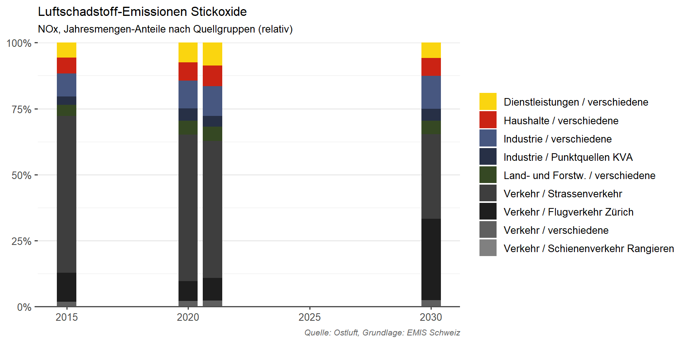
reale Fahrzeugemissionen
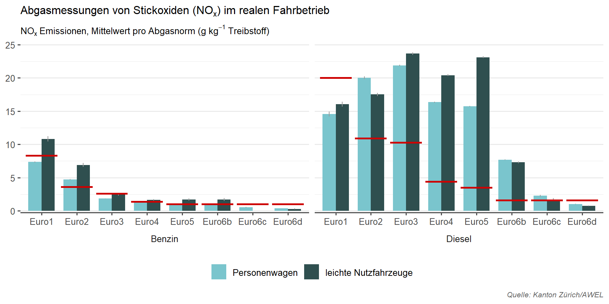
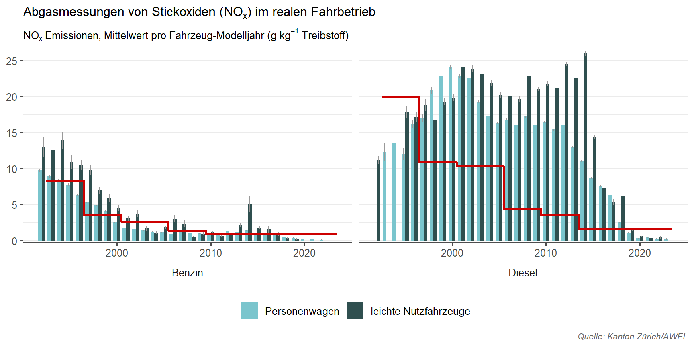
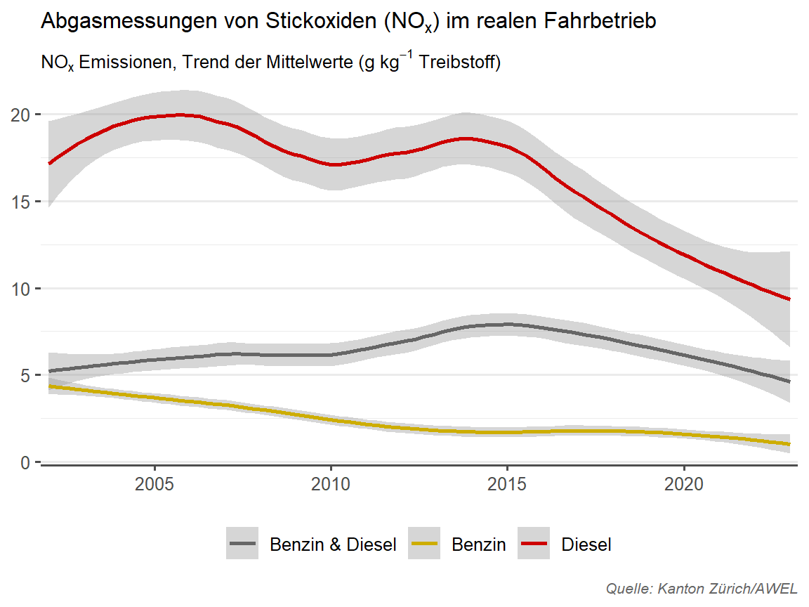
Feinstaub PM2.5
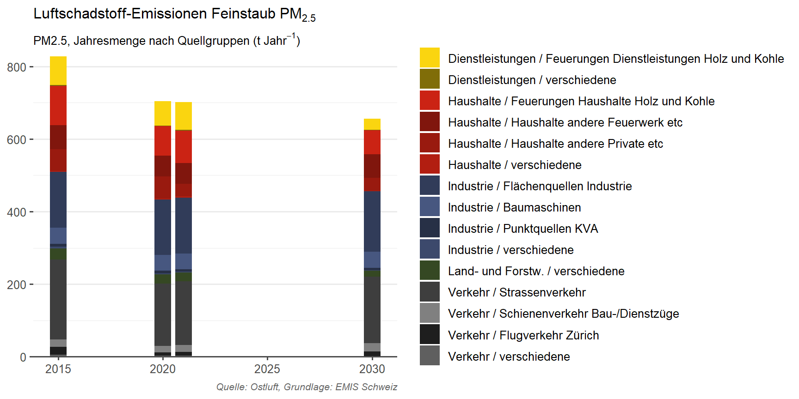
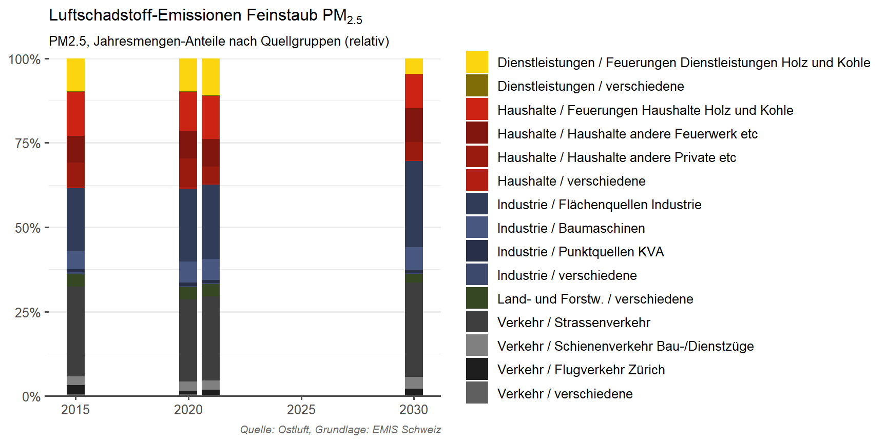
Feinstaub PM10
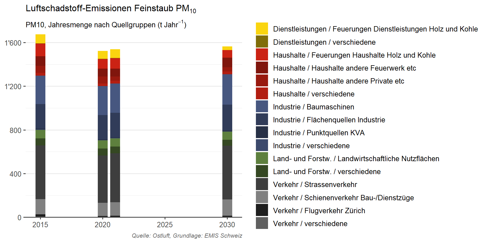
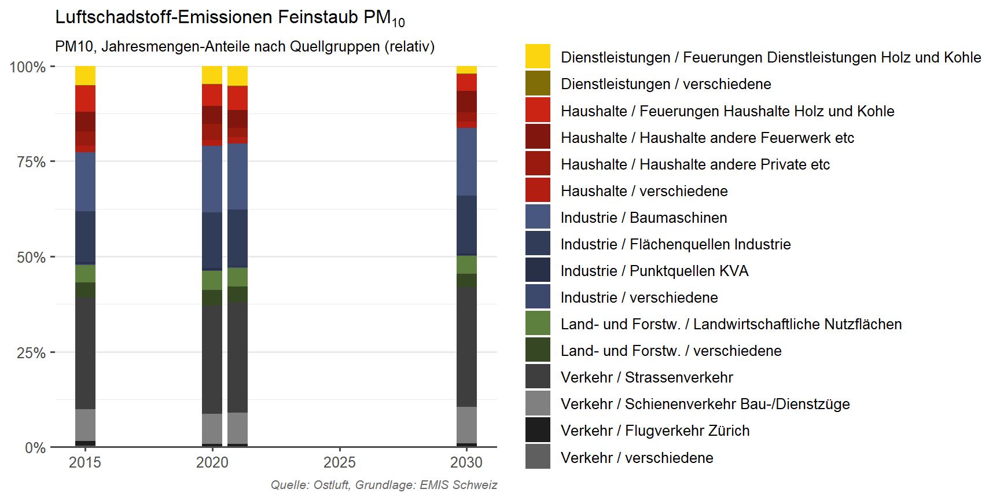
Russ im Feinstaub
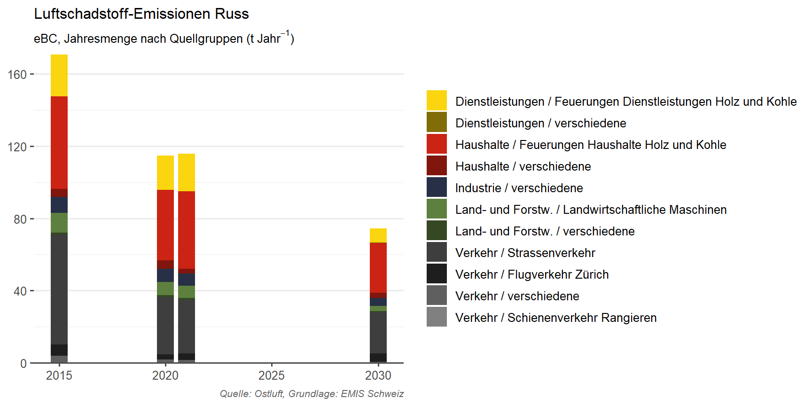
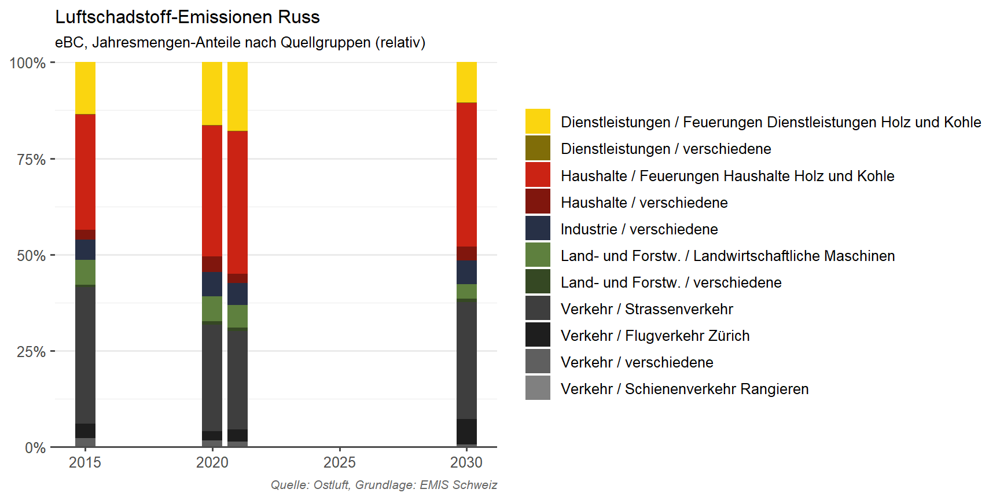
Kohlenmonoxid
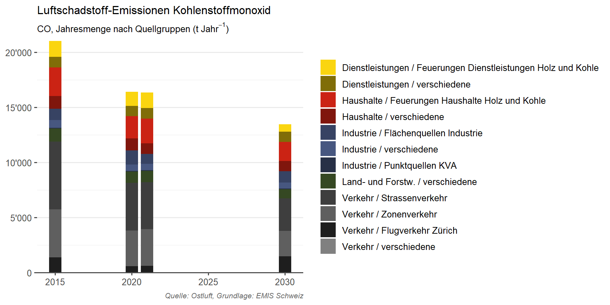
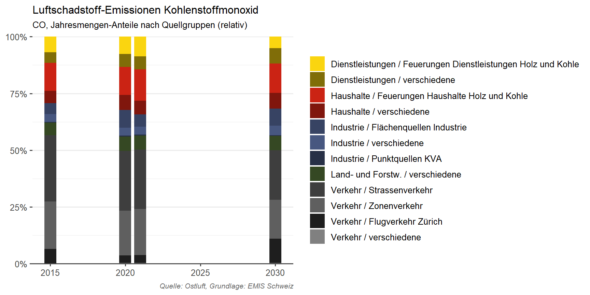
Flüchtige organische Verbindungen
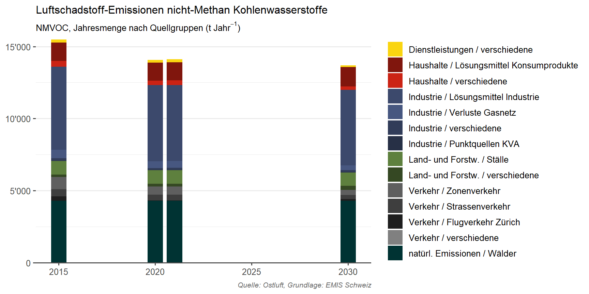
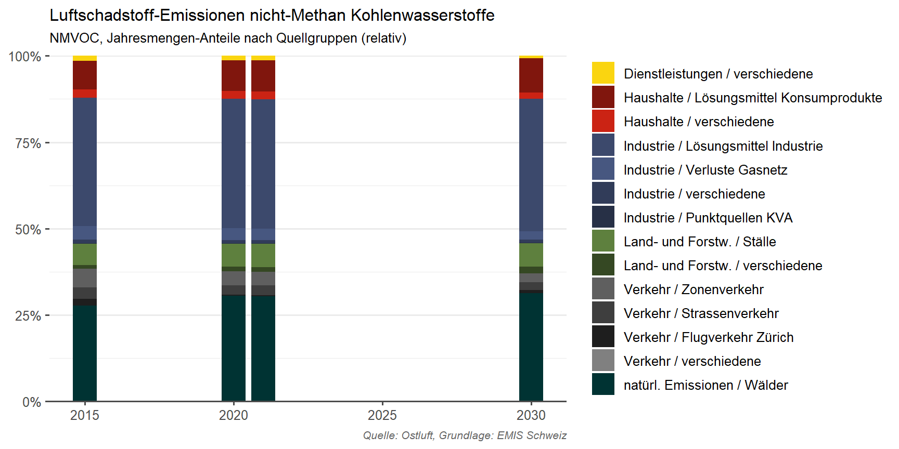
Schwefeldioxid
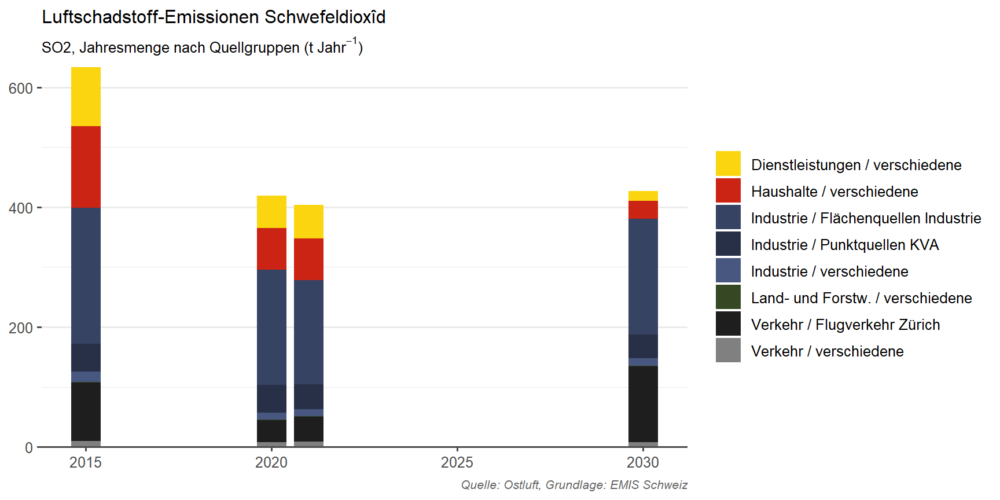
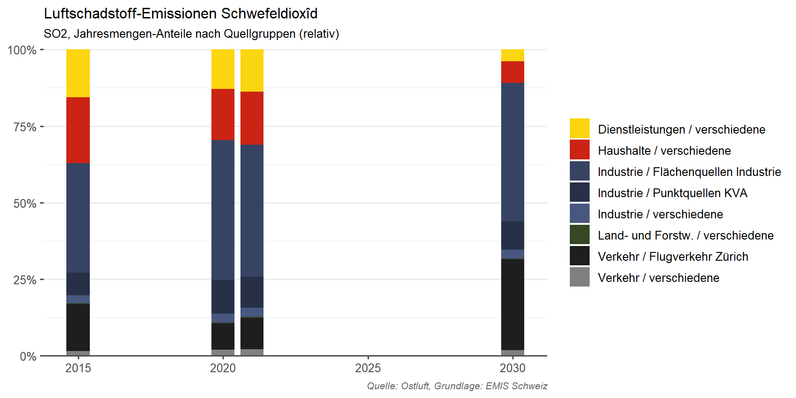
Ammoniak
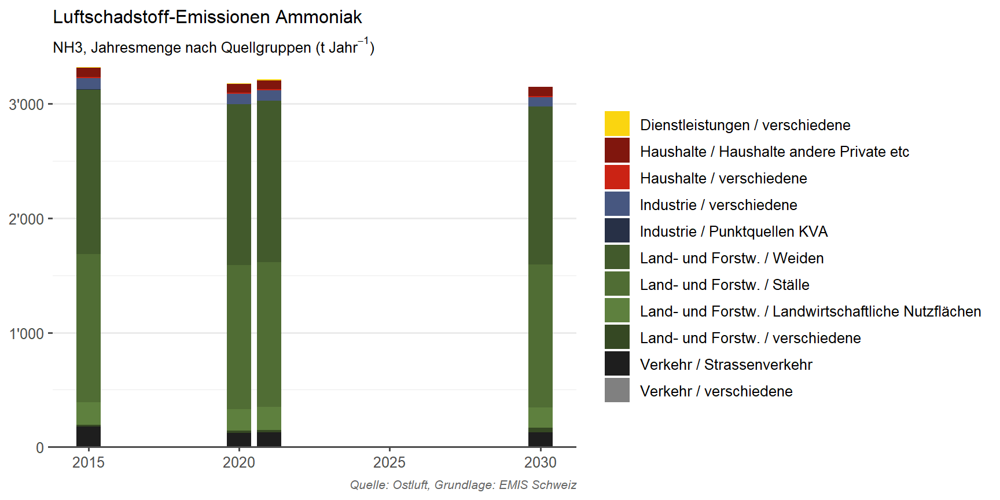
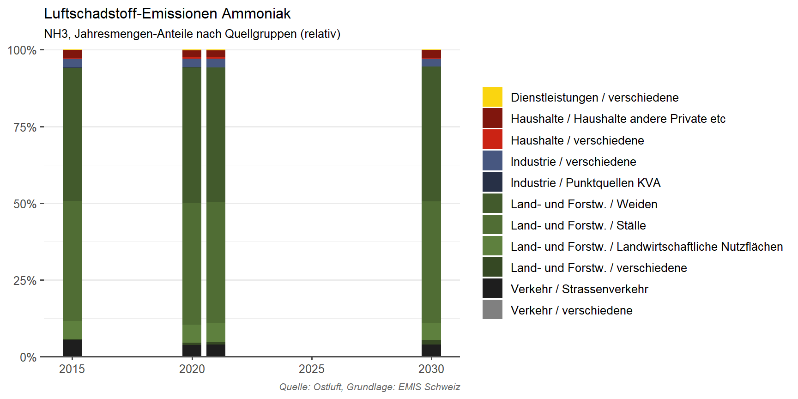